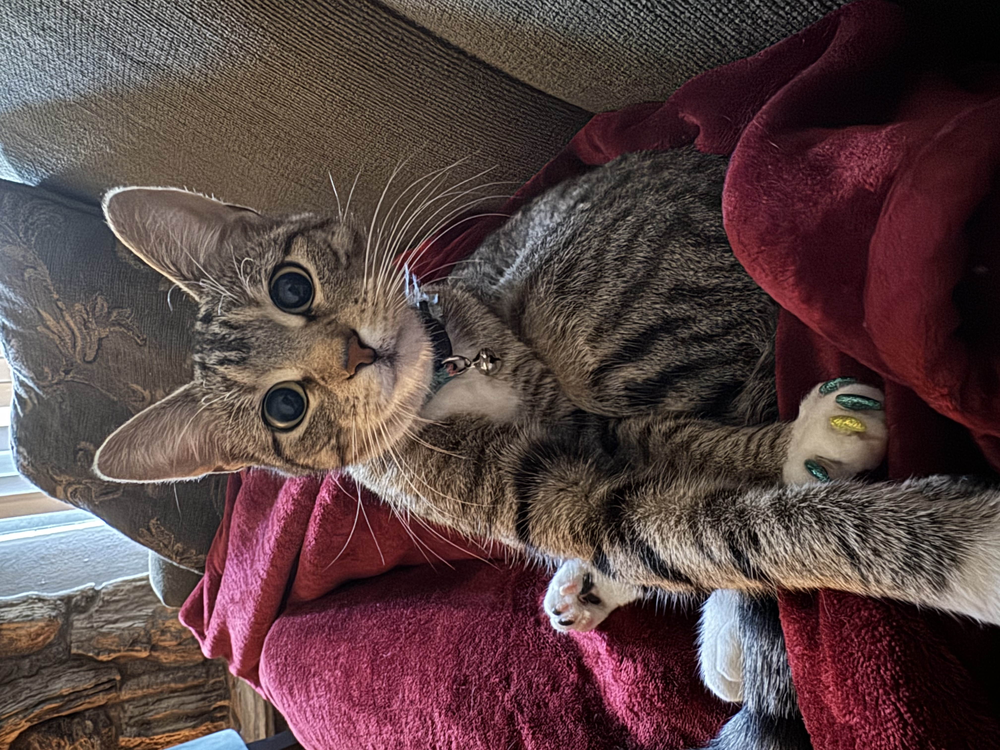

Education:
Texas A&M University-Texarkana - B.S. Political Science, Minor in History
Southern Methodist University - M.S. Computer Science & Artificial Intelligence
Interests:
I am interested in all things Machine Learning, Neuroscience, Quantum Computing, Physics, Aeronautics, Philosophy, Politics & Art.
Hobbies:
In my free time I am either taking pilot lessons for my private license, reading, coding, building model rockets/robots, running, training Jiujitsu, or binge watching my favorite movies.
I have a one year old cat, and her name is "Ari-Schrodinger".
